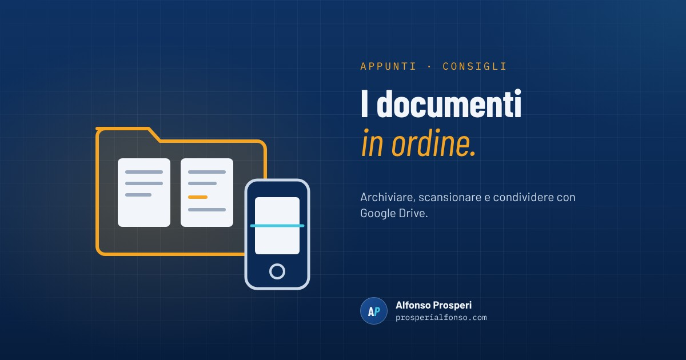

Bollette, ricevute, certificati, garanzie, contratti, la carta d'identità: quante volte li cerchi e non li trovi? Con Google Drive li tieni in un unico posto online, ordinati in cartelle, e li ritrovi dal telefono o dal computer quando servono, anche per stamparli o inviarli.
Perché usarlo
- Sempre a portata di mano. Un documento salvato dal computer lo apri dal telefono, e viceversa.
- Al sicuro se il telefono si rompe. I file non stanno solo sul dispositivo ma nel tuo account Google.
- Si trova tutto. La ricerca legge anche il testo dei PDF e delle scansioni: scrivi "garanzia lavatrice" e Drive la trova.
- Si condivide senza allegati. Mandi un link invece di un file pesante.
Come organizzarlo
- Crea poche cartelle principali: Casa, Auto, Salute, Lavoro, Scuola, Garanzie.
- Dai ai file un nome chiaro con la data, per esempio "2026-11 bolletta luce".
- Segna con la stellina i documenti che apri spesso.
- Una volta all'anno sposta il vecchio in una cartella "Archivio".
Scansionare un foglio con il telefono
Dall'app Drive tocca il tasto + e scegli Scansiona (su iPhone la funzione è disponibile in modo simile). Inquadri il foglio, l'app taglia i bordi e crea un PDF leggibile, che finisce direttamente nella cartella che scegli. È il modo più veloce per conservare scontrini e ricevute che con il tempo sbiadiscono.
Condividere senza rischi
- Condividi con persone precise, inserendo il loro indirizzo email, invece di "chiunque abbia il link".
- Scegli se l'altra persona può solo visualizzare o anche modificare.
- Per documenti delicati, come carta d'identità o referti, togli la condivisione quando non serve più.
Lo spazio gratuito
L'account Google offre 15 GB gratuiti, condivisi con Gmail e Google Foto. Per documenti e PDF bastano a lungo; a riempirli di solito sono foto e video. Se serve più spazio esistono i piani a pagamento di Google One. E proteggi l'account con la verifica in due passaggi: dentro ci sono documenti importanti.
Per foto e video lo strumento giusto è Google Foto.